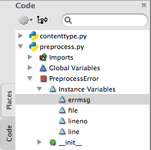

Code Intelligence
Komodo's Code Intelligence system is a set of tools that makes browsing, searching, and programming complex code easier and more accessible. Use the Code Browser to view the hierarchical code structure within a program file or project. The Code Intelligence system includes support for Python, Perl, Tcl, PHP, Ruby, HTML, CSS, JavaScript and Node.js. Code Intelligence is comprised of the following tools:
- Code Browser: A sidebar in the left pane that displays a hierarchical view of all code constructs (for example, variables, methods, imports) in all open files. In the Code Browser, symbols can be sorted and filtered; the current scope of a symbol can be located. To access the Code Browser, click View|Tabs & Sidebars|Code Browser.
- AutoComplete and CallTips: The Code Intelligence system is used to drive autocomplete and calltip functionality for Perl, Python, Ruby, JavaScript, Node.js, Tcl, XSLT, CSS, HTML and XML.
Code Browser Komodo IDE only
Use the Code Browser to view the general program structure of all Python, Perl, PHP, Ruby, Tcl, JavaScript and Node.js source files open in the Editor Pane. For each source file, the Code Browser displays a tree of symbol nodes, including modules, classes, functions, interfaces, namespaces, imports and variables. In Python, instance attributes are also displayed. Each node in the tree hierarchy can be expanded to display further detail, acting as an index to your source code. Symbols can be filtered, and the current scope of a symbol can be located automatically.

Use the Code Browser to:
- View program structure.
- Browse from a listed namespace, command, or variable definition and jump to the actual source code where it is declared.
- Locate all variables used within a file.
- View a symbol definition signature.
- Find all defined symbols matching a pattern.
Settings Menu
The cog button opens the Settings menu with the following options:
- Sort By File Order: Sorts all symbols in the tree by file order.
- Sort Alphabetically: Sorts all symbols in the tree alphabetically.
- Automatically locate cursor position: Toggles automatic highlighting of the code object at the current cursor position.
- Show only active file: Toggles multi-file display.
Locating Current Scope

The Locate Current Scope button to finds the scope of a symbol (for example, namespace, command, or variable definition). Place the cursor on the desired symbol in the source code and then click the Locate Current Scope button to highlight the associated object. Alternatively, click Navigation|Locate Current Scope in Code Browser to open the Code Browser tree to the associated scope.
This is done for you when Automatically locate cursor position is enabled in Settings.
Filtering Symbols
The Filter Symbols text box limits the Code Browser display to matching symbols. Enter the desired symbol name, or partial name, in the text box.
The filter supports regular expressions (Python syntax). If there is an error in the pattern, the text is highlighted and a tooltip describes the error.
Press 'Tab' to switch focus between the Filter text box and the Code Browser tree. Press 'Esc' to clear the current filter pattern.